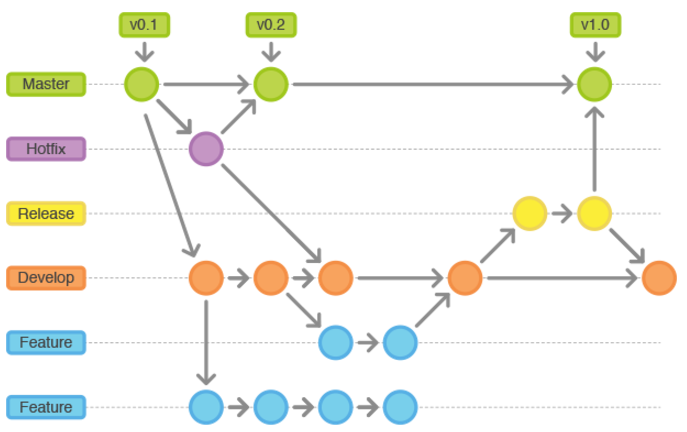

NOTE!: github page根据使用功能区分，想要了解更多见本人wiki
本文介绍Git常见的命令以及部分问题的处理方式，是一篇应用性较强的文章，如果想要更加深入的了解Git的原理，请参考本文的References
工作流

配置
基本配置
在使用Git前要对其进行基本的配置，记录是谁进行当前的修改
1
2
| git config user.name "YOUR_NAME" # 设置 commit 的用户
git config user.email "YOUR_EMIAL@example.com" # 设置 commit 的邮箱
|
个性化配置
1
2
3
4
5
| # 个性化 log
git config --global alias.lg "log --graph --pretty=format:'%Cred%h%Creset -%C(yellow)%d%Creset %s %Cgreen(%cr) %C(bold blue)<%an>%Creset' --abbrev-commit --date=relative" # 自定义lg命令 格式化log的输出
# 个性化 reflog
git config --global alias.rlg "reflog --pretty=format:'%Cred%h%Creset -%C(yellow)%d%Creset %s %Cgreen(%cr) %C(bold blue)<%an>%Creset' --abbrev-commit --date=relative"
|
获取版本库
从远程版本库获取
从远程版本库中直接拉取一个仓库，会在当前路径下新生成一个文件夹
1
2
| git clone https://github.com/zhongjiajie/Autohome.git # 从github获取
git clone git@server-name:path/repo-name.git # 从私有服务器中获取
|
新建版本库
一般做法，只能在本地提交、推送到远程，别的用户不能从该库进行clone以及push操作，看到first_git文件夹下面有.git隐藏文件夹就说明创建成功
1
2
3
| mkdir first_git
cd first_git
git init
|
新建裸库
新建远程版本库，可以提供clone和push到改版本库功能。此时first_git文件夹中和新建版本库不同，会生成多个文件夹
1
2
3
| mkdir first_git
cd first_git
git init --bare
|
远程版本库
查看远程版本库
1
2
| git remote # 查看远程版本库信息
git remote -v # 远程版本库详细信息
|
添加远程版本库
1
| git remote add origin git@server-name:path/repo-name.git # 添加一个远程库
|
推送到远程版本库
1
2
| git push origin master # 推送到远程master分支
git push -u origin BRANCHNAME # 本地新建分支推送到远程兵追踪
|
关联远程分支
1
| git checkout -b dev origin/dev # 新建本地dev分支 与远程origin/dev分支进行关联 切换到本地dev分支
|
抓取分支的修改
1
2
3
| git fetch origin master # 抓取远程master分支的commit信息
git pull origin master # 抓取远程master分支的commit信息并对文件进行相应修改
git fetch origin pull/ID/head:BRANCHNAME # 抓取远程分支的某个pull requests
|
删除远程分支
1
2
| git push origin --delete BRANCHNAME # --delete选项删除远程分支
git push origin :BRANCHNAME # 推送一个空的分支到要删除的远程分支
|
更新远程分析信息
1
| git fetch -p # 更新远程版本库同步分支和tag
|
分支管理
新建分支
1
2
3
4
| git branch dev master # 在master的基础上创建dev分支
git checkout dev # 切换到dev分支
git checkout -b dev master # 在master的基础上创建dev分支 并切换到dev分支
git checkout -b dev origin/dev # 新建dev分支 与远程origin/dev分支进行关联 并切换到dev分支
|
合并分支
1
2
3
4
5
| git checkout master
git merge --no-ff dev # 合并dev分支 no-ff选项保留原分支记录 commit按照时间排序
git checkout dev
git rebase master # 合并dev分支到master分支的最后面 重新排列commit顺序
|
删除分支
1
2
| git branch -d dev # 删除已合并的分支
git branch -D dev # 强行删除分支
|
修改和提交
状态和差异
1
2
3
4
5
| git status # 查看工作区、暂存区的状态
git diff # 查看未暂存的文件更新
git diff --cached # 查看已暂存文件的更新
git diff HEAD -- FILENAME # 查看工作区和版本库里面最新版本的区别
git diff BRANCH_1 BRANCH_2 # 在合并改动之前，预览两个分支的差异
|
删除和移动
1
2
3
4
5
6
| git rm FILENAME # 直接删除文件
git rm --cached FILENAME # 删除文件暂存状态
git mv FILENAME_1 FILENAME_2 # FILENAME_1重命名成FILENAME_2
git mv FILENAME_1 path/to/FILENAME_2 # FILENAME_1移动到path/to目录并重命名成FILENAME_2
git rm FILENAME # 删除文件FILENAME
|
储藏和恢复
1
2
3
4
5
6
| git stash # 储藏当前工作状态
git stash list # 查看储藏列表
git stash apply STASH_ID # 恢复指定储藏状态
git stash drop STASH_ID # 删除指定储藏ID
git stash pop # 恢复最近储藏 并删除 相当于apply + drop
git stash clear # 清空储藏列表
|
提交修改
1
2
3
4
5
| git add FILENAME # 添加文件到暂存区
git add . # 添加当前全部修改到暂存区
git commit -m 'commit log' # 将暂存区修改提交到本地版本库并记录commit log
git commit -amend # 修改最后一次提交
git push origin master # 提交到远程版本库
|
修改提交人信息
1
| git commit --amend --author "YOUR_NAME <YOUR_EMIAL@example.com>" # 修改上次提交的用户信息
|
历史和回退
历史
1
2
3
4
| git log --oneline # 查看历史 每个历史一条记录
git log --oneline FILENAME # 查看指定文件历史 每个历史一条记录
git log -p -2 # 显示最近2次提交内容的差异
git show COMMIT_ID # 查看某次修改
|
回退
1
2
3
4
5
6
7
8
| git checkout -- FILENAME # 丢弃工作区上某个文件的修改
git reset HEAD FILENAME # 丢弃暂存区上某个文件的修改，重新放回工作区
git reset --hard HEAD^ # 回退到上一个版本
git reset --hard COMMIT_ID # 回退到具体某个版
git reflog # 查看命令历史 常在merge或rebase丢失了commit后使用
git revert COMMIT_ID # 撤销指定的提交
|
标签
新建标签
1
2
3
| git tag v0.1 # 新建标签，默认位 HEAD
git tag v0.1 COMMIT_ID # 对指定的 commit id 打标签
git tag -a v0.1 -m 'version 0.1 released' # 新建带注释标签
|
查看标签
1
2
| git tag # 显示所有标签
git show TAGNAME # 显示指定标签信息
|
删除标签
1
2
| git tag -d TAGNAME # 删除标签
git push origin :refs/tags/TAGNAME #删除远程标签
|
其他操作
1
2
3
| git checkout TAGNAME # 切换到标签
git push origin TAGNAME # 推送分支到源上
git push origin --tags # 一次性推送全部尚未推送到远程的本地标签
|
FAQ
环境配置问题
windows下git bash中文乱码解决办法
修改
统计功能
统计每个用户提交的次数
1
| git shortlog -nes # 统计每个用户提交的次数 name + email + summary
|
恢复
1
| git ls-files -d | xargs echo -e | xargs git checkout --
|
其他
References
Git 常用技能
my-git
Git教程
Modifying an inactive pull request locally